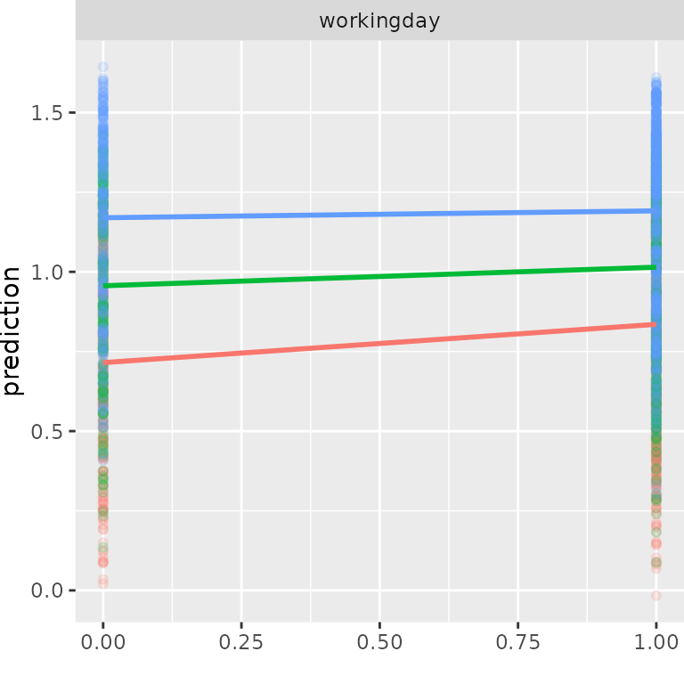
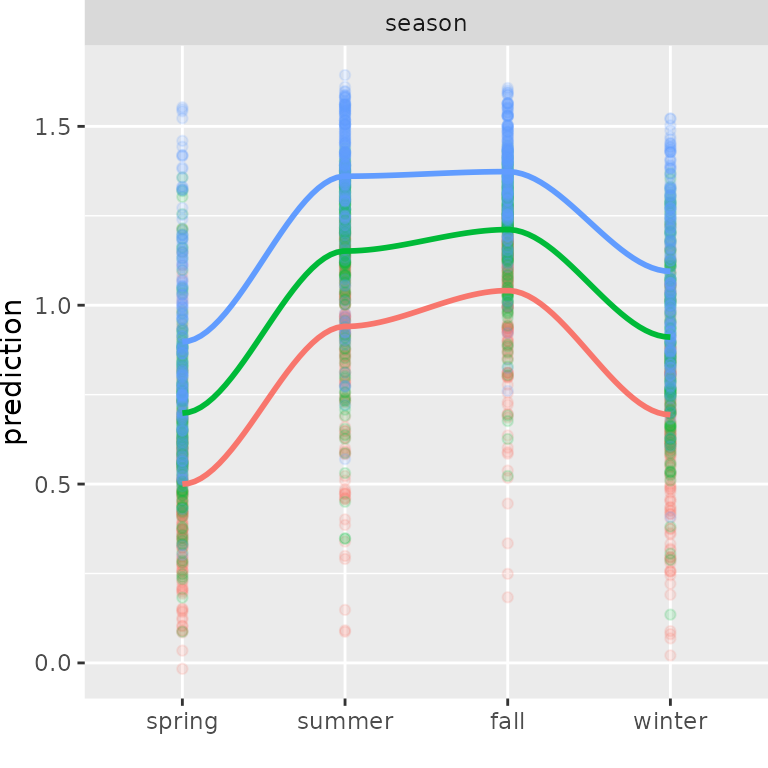

D-vine quantile regression with discrete variables: analysis of bike rental data
Dani Kraus and Thomas Nagler
November 8, 2017
bike-rental.RmdRequired packages
library(vinereg)
library(quantreg)
library(ggplot2)
library(dplyr)
library(purrr)
library(scales)Plot function for marginal effects
plot_marginal_effects <- function(covs, preds) {
cbind(covs, preds) %>%
tidyr::gather(alpha, prediction, -seq_len(NCOL(covs))) %>%
dplyr::mutate(prediction = as.numeric(prediction)) %>%
tidyr::gather(variable, value, -(alpha:prediction)) %>%
dplyr::mutate(value = as.numeric(value)) %>%
ggplot(aes(value, prediction, color = alpha)) +
geom_point(alpha = 0.15) +
geom_smooth(span = 0.5, se = FALSE) +
facet_wrap(~ variable, scale = "free_x") +
theme(legend.position = "none") +
theme(plot.margin = unit(c(0, 0, 0, 0), "mm")) +
xlab("")
}Data preparation
Load data
bikedata <- read.csv("day.csv")
bikedata[, 2] <- as.Date(bikedata[, 2])
head(bikedata)## instant dteday season yr mnth holiday weekday workingday weathersit
## 1 1 2011-01-01 1 0 1 0 6 0 2
## 2 2 2011-01-02 1 0 1 0 0 0 2
## 3 3 2011-01-03 1 0 1 0 1 1 1
## 4 4 2011-01-04 1 0 1 0 2 1 1
## 5 5 2011-01-05 1 0 1 0 3 1 1
## 6 6 2011-01-06 1 0 1 0 4 1 1
## temp atemp hum windspeed casual registered cnt
## 1 0.344167 0.363625 0.805833 0.1604460 331 654 985
## 2 0.363478 0.353739 0.696087 0.2485390 131 670 801
## 3 0.196364 0.189405 0.437273 0.2483090 120 1229 1349
## 4 0.200000 0.212122 0.590435 0.1602960 108 1454 1562
## 5 0.226957 0.229270 0.436957 0.1869000 82 1518 1600
## 6 0.204348 0.233209 0.518261 0.0895652 88 1518 1606Rename variables
bikedata <- bikedata %>%
rename(
temperature = atemp,
month = mnth,
weathersituation = weathersit,
humidity = hum,
count = cnt
)Un-normalize variables
See variable description on UCI web page.
bikedata <- bikedata %>%
mutate(
temperature = 66 * temperature + 16,
windspeed = 67 * windspeed,
humidity = 100 * humidity
)Show trend
ggplot(bikedata, aes(dteday, count)) +
geom_line() +
scale_x_date(labels = scales::date_format("%b %y")) +
xlab("date") +
ylab("rental count") +
stat_smooth(method = "lm", se = FALSE, linetype = "dashed") +
theme(plot.title = element_text(lineheight = 0.8, face = "bold", size = 20)) +
theme(text = element_text(size = 18))
Remove trend
lm_trend <- lm(count ~ instant, data = bikedata)
trend <- predict(lm_trend)
bikedata <- mutate(bikedata, count = count / trend)
ggplot(bikedata, aes(dteday, count)) +
geom_line() +
scale_x_date(labels = scales::date_format("%b %y")) +
xlab("date") +
ylab("detrended rental count") +
theme(plot.title = element_text(lineheight = 0.8, face = "bold", size = 20)) +
theme(text = element_text(size = 18))
Nonparametric D-vine regression model
Fit model
npdvqr_fit <- vinereg(count ~ ., data = bikedata, family_set = "nonpar", selcrit = "aic")
colnames(bikedata)[npdvqr_fit$selected_vars]## [1] "temperature" "humidity" "weekday"Marginal effects
plot_marginal_effects(
covs = select(bikedata, temperature),
preds = npdvqr_pred
)

plot_marginal_effects(covs = select(bikedata, windspeed), preds = npdvqr_pred) 
month_labs <- c("Jan","", "Mar", "", "May", "", "Jul", "", "Sep", "", "Nov", "")
plot_marginal_effects(covs = select(bikedata, month), preds = npdvqr_pred) +
scale_x_discrete(limits = 1:12, labels = month_labs)
plot_marginal_effects(covs = select(bikedata, weathersituation),
preds = npdvqr_pred) +
scale_x_discrete(limits = 1:3,labels = c("good", "medium", "bad"))
weekday_labs <- c("Mon", "Tue", "Wed", "Thu", "Fri", "Sat", "Sun")
plot_marginal_effects(covs = select(bikedata, weekday), preds = npdvqr_pred) +
scale_x_discrete(limits = 1:7, labels = weekday_labs)
plot_marginal_effects(covs = select(bikedata, workingday), preds = npdvqr_pred) +
scale_x_discrete(limits = 0:1, labels = c("no", "yes")) +
geom_smooth(method = "lm", se = FALSE) +
xlim(c(0, 1))
season_labs <- c("spring", "summer", "fall", "winter")
plot_marginal_effects(covs = select(bikedata, season), preds = npdvqr_pred) +
scale_x_discrete(limits = 1:4, labels = season_labs)